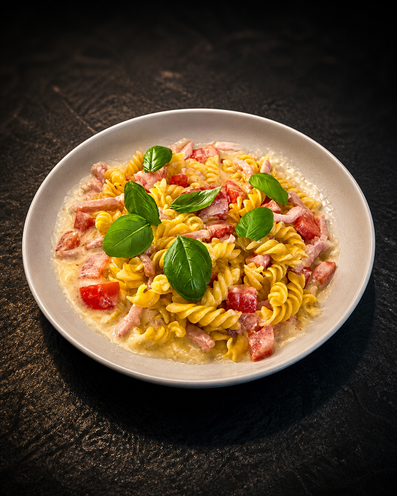

Pâtes aux allumettes de bacon, sauce skyr parmesan

Ingrédients
- 90 g de pâtes
- 80 g d’allumettes de bacon allégées
- 1 œuf cru
- 50 g de skyr
- 20 g de parmesan
- 1 tomate coupée en dés
Préparation
- Faire cuire les pâtes.
- Faire revenir les allumettes de bacon à la poêle.
- Dans un bol, préparer la sauce en mélangeant l’œuf cru, le skyr, le parmesan et la tomate coupée en dés.
- Quand le bacon est cuit, le mettre dans la sauce.
- Passer la sauce 30 secondes à 1 minute au micro-ondes.
- Ajouter les pâtes et mélanger avant de servir.
Valeurs nutritionnelles (approx.)
Par portion : 648 kcal • 50 g protéines • 67 g glucides • 19 g lipides • 6 g fibres